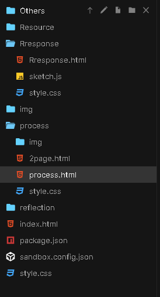
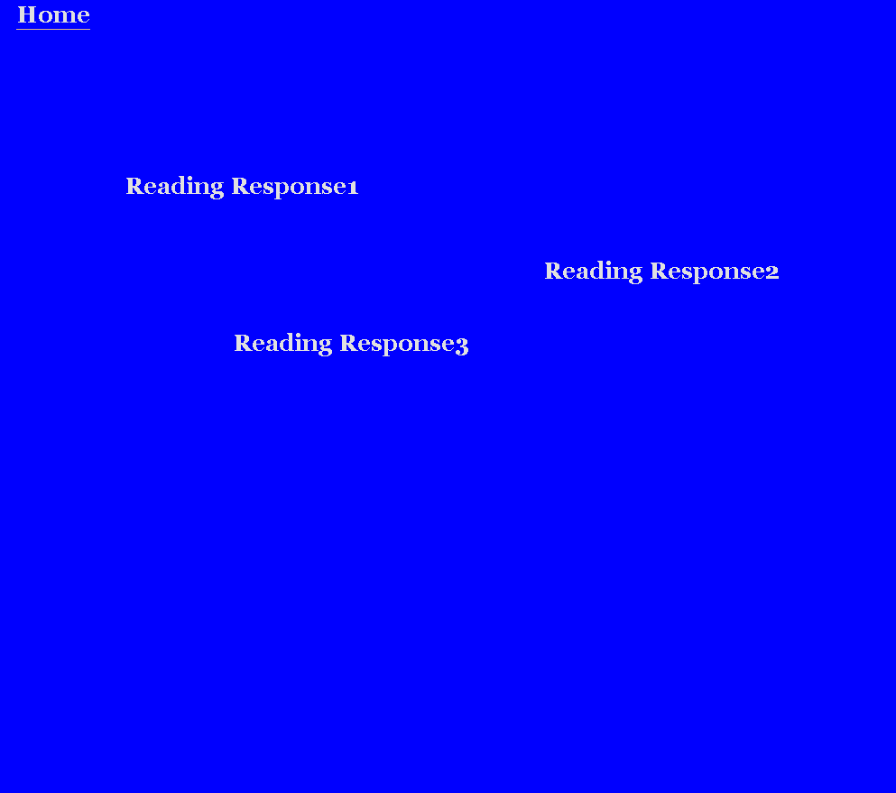
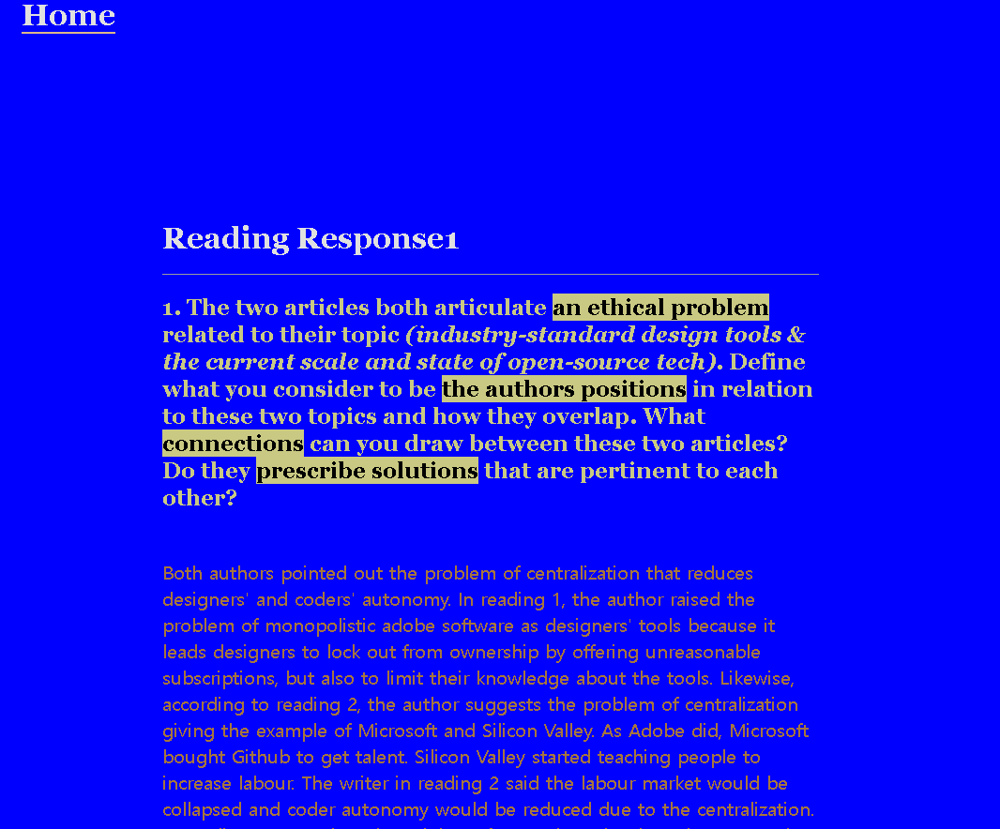

Working process
Feb.07.2022
My drawing style is hugely inspired by comics. So, I decided on my website to use comics style.

I tried to put border lines to fit with my drawing. I fill some box
colours just for checking layouts.
I want to change each box size when users click a specific box as an
interaction. However,
I have no idea how to do it. I think need to check how to do javascript.

(after putting my drawings)
Feb.13.2020

I made navigations to different sections: Reflection, Process, Reading
response, Resouce, Other contents
For the Reading response and process, I made some layouts. However, I
haven't decided on their styles yet.
I'm thinking of trying other different styles from the main page since
I'm a beginner at coding.

I used "position: fixed" that I learnt in the last class workshop on Friday
 
I'm trying to learn basic coding via the Internet in my free time.
Today, I learnt about Jquery I thought I could use it in
my reading response webpage.So, I applied toggle. It was good that I
don't have to make additional pages
for the reading response.